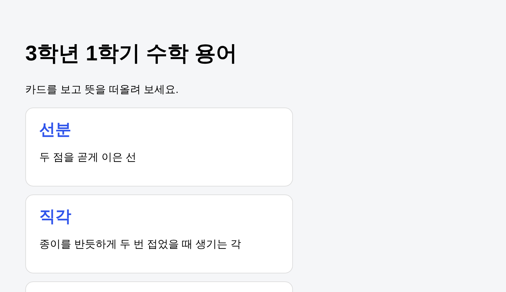
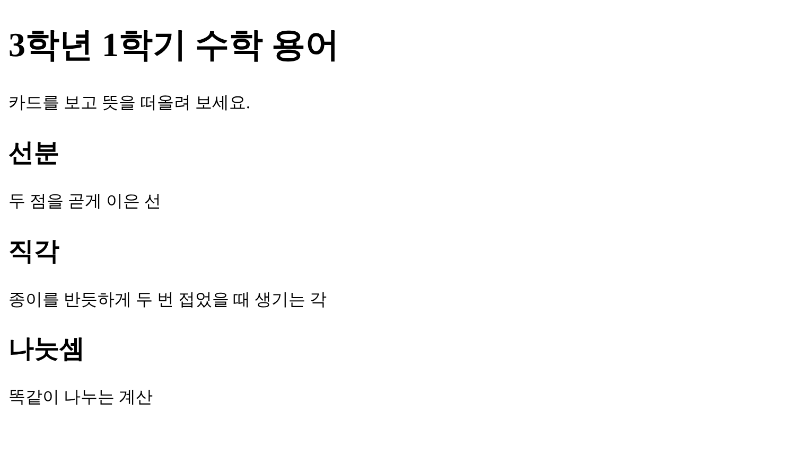
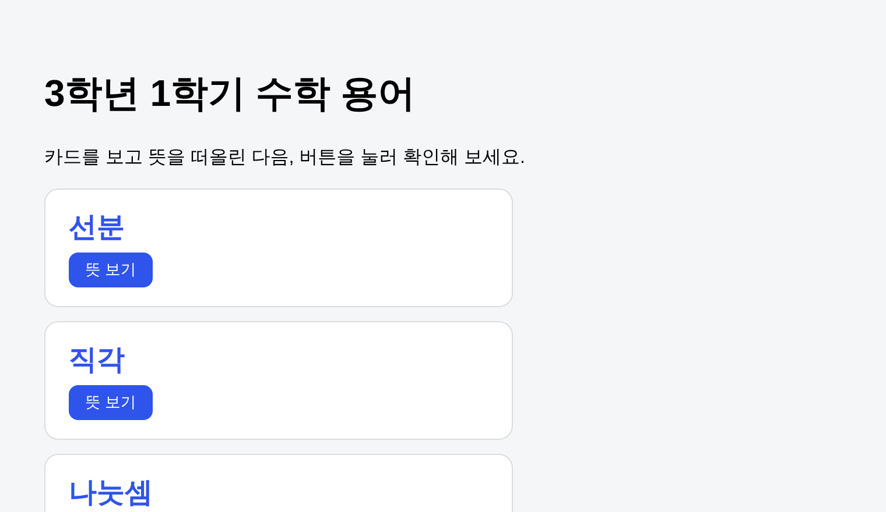
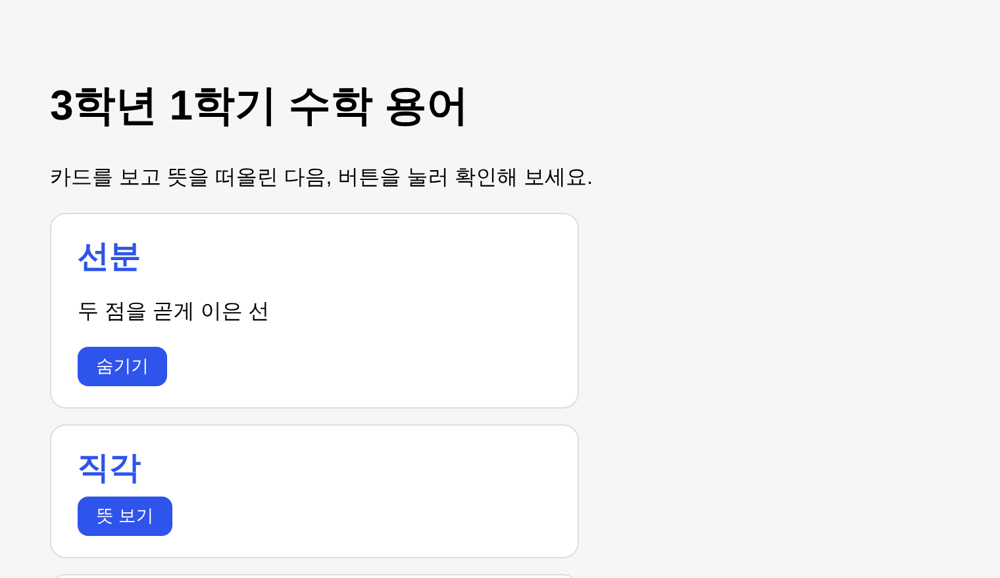
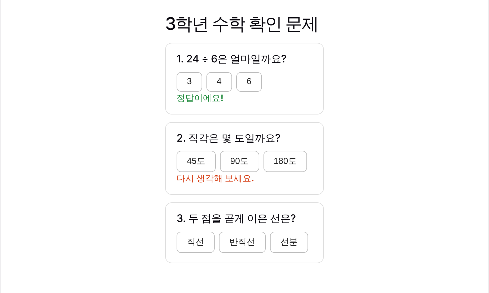
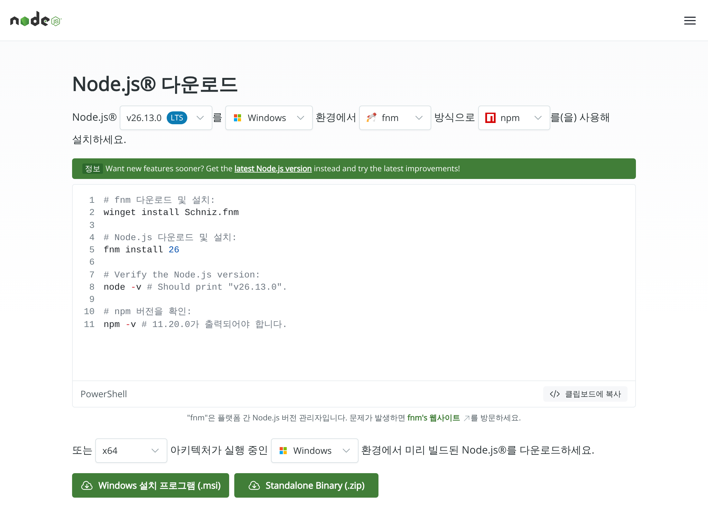
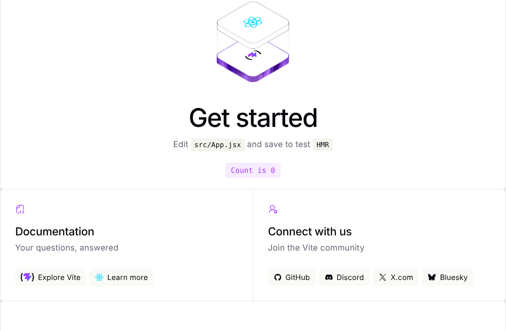
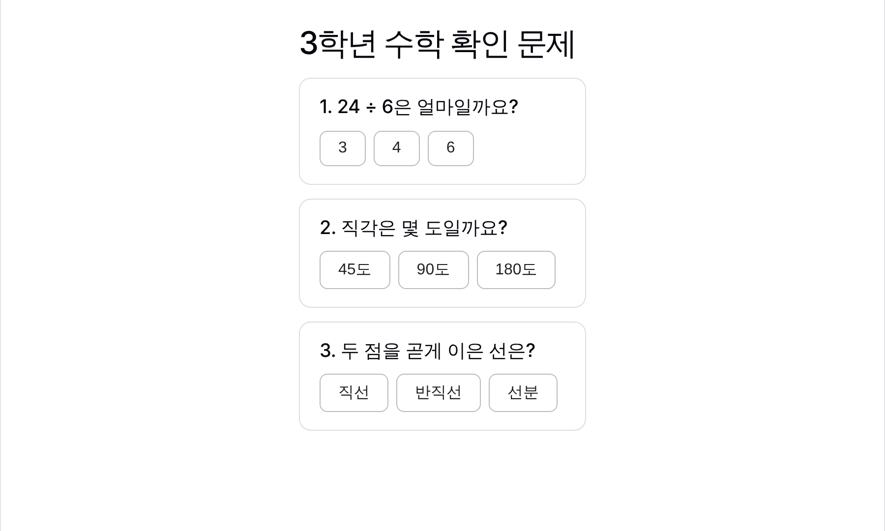

VS Code·React 첫걸음
프로그램을 처음 깔아 보는 분도 따라올 수 있게, 클릭할 곳마다 빨간 번호로 짚어 드려요. 끝까지 따라 하면 직접 만든 수학 용어 카드와 수학 퀴즈가 생깁니다.
먼저, 이걸 꼭 배워야 할까요?
결론부터 말하면 VS Code는 배워 두면 좋고, React는 맛보기면 충분해요. 편집자가 개발자가 될 필요는 없어요. 다만 요즘은 AI가 코드를 대신 써 주기 때문에, 그 코드를 열어 보고, 저장하고, 실행해 보는 곳이 하나 있으면 할 수 있는 일이 크게 늘어나요. 그곳이 VS Code예요.
| 무엇 | 한 줄 설명 | 편집자에게 필요한 정도 |
|---|---|---|
| VS Code | 코드와 글자 파일을 쓰는 무료 편집기. Claude Code·Codex 같은 AI를 붙여 쓰는 작업대 | ★★★ 꼭 추천 |
| HTML·CSS | 웹페이지의 뼈대(HTML)와 옷(CSS) | ★★★ 읽을 수 있을 정도 |
| React | 웹 화면을 블록처럼 조립하는 도구. AI가 만들어 주는 웹앱 대부분이 React | ★★★ 구조만 알면 충분 |
- VS Code를 설치하고, 폴더를 열고, 파일을 만들고 저장할 수 있어요.
- 간단한 웹페이지를 만들어 브라우저로 열어 볼 수 있어요.
- AI에게 "이렇게 고쳐 줘"라고 시키고, 고친 내용을 확인할 수 있어요.
- React 프로젝트를 만들어 실행해 보고, 어디를 고치면 화면이 바뀌는지 알 수 있어요.
그림 표시: 실제 화면은 실제로 찍은 스크린샷이에요. 그림은 실제 화면을 보기 쉽게 다시 그린 것이라, 버전에 따라 문구나 위치가 조금 다를 수 있어요. 설명은 Windows 기준이고, Mac은 Ctrl 대신 Cmd를 누르면 돼요.
1강. VS Code 설치하고 둘러보기
1VS Code가 뭐예요?
한글이나 워드는 사람이 읽는 문서를 쓰는 프로그램이에요. VS Code는 컴퓨터가 읽는 문서(코드)를 쓰는 프로그램이에요. 메모장의 아주 똑똑한 버전이라고 생각하면 쉬워요.
- Microsoft가 만든 무료 프로그램이에요.
- 코드에 색을 칠해 줘서 읽기 쉬워요.
- "확장"이라는 추가 기능을 붙일 수 있어요. 한국어 메뉴, AI 도우미도 확장으로 붙여요.
2내려받기
인터넷 주소창에 code.visualstudio.com을 입력해 들어가요.
- 파란 Download for Windows 버튼을 눌러요. 설치 파일(
VSCodeUserSetup-x64-….exe)이 내려받아져요.
3설치하기
내려받은 파일을 두 번 클릭해 실행해요. 사용권 계약에 동의합니다를 고르고 다음을 누르다 보면 아래 화면이 나와요.
- 'Code(으)로 열기' 두 줄에 체크해요. 나중에 폴더에서 마우스 오른쪽 버튼으로 바로 열 수 있어요.
- PATH에 추가는 꼭 체크된 채로 두세요. 4강에서 필요해요.
- 다음 → 설치 → 마침을 누르면 끝이에요.
4처음 화면 둘러보기
VS Code를 처음 켜면 이런 화면이 나와요. 다섯 구역만 기억하면 돼요.
- 메뉴: 파일 열기, 저장 같은 명령이 모여 있어요.
- 활동 표시줄: 맨 왼쪽 아이콘 줄이에요. 위에서부터 탐색기(파일 목록), 검색, 소스 제어, 실행, 확장이에요.
- 사이드바: 활동 표시줄에서 고른 것이 여기 보여요. 지금은 파일 목록(탐색기)이에요.
- 편집기: 글(코드)을 쓰는 곳이에요. 처음에는 시작(Welcome) 화면이 떠 있어요.
- 상태 표시줄: 맨 아래 줄이에요. 지금 파일의 정보가 작게 나와요.
5한국어로 바꾸기
Windows가 한국어로 되어 있으면, 처음 켤 때 오른쪽 아래에 이런 알림이 떠요.
- 설치 및 다시 시작을 누르면, VS Code가 저절로 다시 켜지면서 메뉴가 한국어로 바뀌어요.
알림이 안 떴다면 확장에서 직접 설치해요.
- 활동 표시줄에서 확장 아이콘(네모 네 개)을 눌러요. 단축키는 Ctrl+Shift+X예요.
- 검색 칸에
korean을 입력해요. - Korean Language Pack for Visual Studio Code(Microsoft)의 Install을 누르고, 오른쪽 아래에 뜨는 Change Language and Restart를 눌러요.
6작업 폴더 열기
VS Code는 폴더 단위로 일해요. 먼저 Windows 탐색기에서 문서 폴더 안에 word-cards라는 새 폴더를 만들어 두세요. 폴더 이름은 영어로 짓는 게 좋아요.
- 메뉴에서 파일을 눌러요.
- 폴더 열기…를 누르고, 방금 만든
word-cards폴더를 골라 폴더 선택을 눌러요.
처음 여는 폴더면 이런 질문이 나와요.
- 내가 만든 폴더니까 예, 작성자를 신뢰합니다를 눌러요. 남이 보낸 폴더라면 잘 모를 때는 "아니요"를 고르는 게 안전해요.
- VS Code는 코드를 쓰는 무료 편집기예요.
- 왼쪽 아이콘 줄에서 탐색기(파일 목록)와 확장(추가 기능)을 가장 많이 써요.
- 일을 시작할 때는 항상 파일 → 폴더 열기부터 해요.
2강. 첫 웹페이지 만들기: 수학 용어 카드
오늘 만들 결과물이에요. 수학 용어를 카드로 보여 주는 아주 간단한 웹페이지예요.

1웹페이지는 글자 파일이에요
우리가 보는 웹페이지는 사실 글자로 된 파일이에요. 브라우저(크롬, 엣지)가 그 글자를 읽고 화면으로 그려 줘요.
- HTML: 무엇을 보여 줄지 정하는 뼈대예요. 제목, 문단, 카드 같은 것.
- CSS: 어떻게 보여 줄지 정하는 옷이에요. 색, 크기, 테두리 같은 것.
책으로 치면 HTML은 원고, CSS는 디자인 지시서예요.
2새 파일 만들기
- 탐색기에서 폴더 이름(WORD-CARDS) 위에 마우스를 올리면 작은 아이콘이 나와요. 첫 번째 새 파일 아이콘을 눌러요.
- 이름 칸에
index.html을 입력하고 Enter를 눌러요. 점(.) 뒤의 html이 "이건 웹페이지 파일이야"라는 뜻이에요.
3느낌표 하나로 기본 틀 만들기
웹페이지에는 꼭 들어가야 하는 기본 틀이 있어요. 외울 필요 없어요. 편집기에 느낌표(!) 하나만 입력해 보세요.
- 목록에 !가 뜨면 Enter를 눌러요. 기본 틀이 한 번에 채워져요.
4내용 쓰기
기본 틀이 생겼으면 아래처럼 고쳐요. 처음에는 오른쪽 아래 복사 버튼으로 복사해서 붙여 넣어도 괜찮아요. 붙여 넣은 다음, 카드 속 단어를 바꿔 보면서 익히면 돼요.
- <title>은 브라우저 탭에 보이는 이름이에요.
- <div class="card"> … </div>가 카드 한 장이에요. 이 덩어리를 복사해서 붙이면 카드가 한 장 늘어요.
- 탭 이름 옆의 흰 동그라미(●)는 "아직 저장 안 했어요"라는 뜻이에요.
<h2>로 열고 </h2>로 닫아요. 여는 표시와 닫는 표시 사이에 내용을 써요. 괄호를 열면 닫는 것과 같아요.5저장하기
Ctrl+S를 누르면 저장돼요. 탭의 ●가 ×로 바뀌면 저장된 거예요.
6브라우저로 열어 보기
- 탐색기의 index.html에서 마우스 오른쪽 버튼을 눌러요.
- 파일 탐색기에 표시를 누르면 Windows 폴더 창이 열려요. 거기서 index.html을 두 번 클릭하면 브라우저로 열려요.

잘 나왔나요? 아직 밋밋하죠. 이제 옷(CSS)을 입혀요.
7CSS로 꾸미기
2단계처럼 새 파일을 하나 더 만들고 이름을 style.css로 지어요. 그리고 아래 내용을 넣고 저장해요.
- .card는 "class가 card인 것들"이라는 뜻이에요. 그 안에 쓴 것이 카드에 입혀져요.
- color는 글자 색이에요.
#2f54eb는 파란색을 나타내는 색 번호예요.
그다음 index.html로 돌아가서, <title> 줄 바로 아래에 이 한 줄을 넣어요. "style.css를 옷으로 입어"라는 뜻이에요.
저장하고 브라우저에서 F5(새로 고침)를 누르면 맨 위에서 본 완성 화면이 나와요.
8혼자 해 보기
- 카드를 한 장 더 넣어 보세요. (예: 원 / 한 점에서 같은 거리에 있는 점들을 이은 둥근 선)
#2f54eb를#1f8a3b로 바꿔 보세요. 제목이 초록색이 돼요.width: 360px;의 숫자를 바꿔 카드 너비를 바꿔 보세요.
- 웹페이지 = HTML(뼈대) + CSS(옷)
- ! + Enter로 기본 틀, Ctrl+S로 저장, 브라우저에서 F5로 확인
3강. AI에게 시켜서 고치기: Claude Code 확장
2강에서는 코드를 직접 썼어요. 이번에는 AI에게 말로 시켜서 고쳐요. 카드의 뜻을 처음에는 숨겨 두고, "뜻 보기" 버튼을 누르면 보이게 바꿔 볼 거예요. 낱말 카드 공부처럼요.
1Claude Code 확장 설치하기
- 활동 표시줄의 확장 아이콘을 눌러요.
- 검색 칸에
claude code를 입력해요. - 만든 곳이 Anthropic인지 확인하고 설치를 눌러요. 비슷한 이름의 가짜 확장도 있으니 만든 곳을 꼭 확인해요.
2Claude Code 창 열기
- index.html을 연 다음, 편집기 오른쪽 위의 주황색 Claude 아이콘을 눌러요.
- 오른쪽에 Claude Code 창이 열려요. 처음이면 로그인 버튼이 나오니 Claude 계정으로 로그인해요.
- 맨 아래 입력 칸에 하고 싶은 일을 한국어로 쓰면 돼요.
3요청 쓰기
입력 칸에 이렇게 써 보세요.
잘 시키는 법은 사람에게 일을 맡길 때와 같아요. 어느 파일에서, 무엇을, 어떻게 되게 할지 말해 주면 돼요.
4바뀐 내용 확인하고 허락하기
Claude는 파일을 고치기 전에 무엇을 바꿀지 보여 주고 허락을 받아요.
- 빨간 줄(−)은 지워지는 줄, 초록 줄(+)은 새로 생기는 줄이에요. 교정지의 삭제·삽입 표시와 같아요.
- 괜찮으면 Yes를 눌러요. 마음에 안 들면 No를 누르고 다시 설명하면 돼요.
5결과 확인
저장한 다음, 브라우저에서 F5를 눌러요.


index.html을 열어 보면 맨 아래에 <script>로 시작하는 부분이 새로 생겼을 거예요. 이것이 JavaScript로, 버튼을 눌렀을 때 할 일을 적은 부분이에요. 뜻을 다 몰라도 괜찮아요. 궁금하면 Claude에게 "이 script 부분을 쉽게 설명해 줘"라고 물어보세요.
codex를 검색해 만든 곳이 OpenAI인지 확인하고 설치한 뒤, ChatGPT 계정으로 로그인하면 돼요. 요청을 쓰고, 바뀐 내용을 확인하고, 허락하는 흐름이 같아요.- AI에게는 어느 파일 / 무엇을 / 어떻게를 말해 줘요.
- 고치기 전에 보여 주는 빨간 줄·초록 줄을 꼭 확인하고 허락해요.
4강. React 맛보기: 수학 퀴즈 만들기
마지막으로 React로 눌러서 푸는 수학 퀴즈를 만들어요. 코드를 외우는 게 목표가 아니에요. React 프로젝트가 어떻게 생겼고, 어디를 고치면 화면이 바뀌는지 한 번 겪어 보는 게 목표예요.

1React가 뭐예요?
React는 웹 화면을 블록(컴포넌트)으로 나눠 만드는 도구예요. 문제지를 만들 때 "문제 칸" 틀을 하나 만들어 두고, 거기에 문제만 바꿔 넣어 여러 번 쓰는 것과 같아요.
2강처럼 HTML로 만들면 문제마다 버튼과 정답 확인 코드를 따로 써야 해요. React에서는 틀을 한 번만 만들면 돼요. 요즘 AI가 만들어 주는 웹앱도 대부분 React로 되어 있어서, 이 구조를 알아 두면 AI에게 고쳐 달라고 말하기가 훨씬 쉬워요.
2Node.js 설치하기
React 프로젝트를 만들고 실행하려면 Node.js라는 프로그램이 필요해요. 한 번만 깔면 돼요. nodejs.org/ko/download에 들어가요.

- 버전 옆에 LTS(오래 지원하는 안정판)라고 쓰여 있는지 확인해요.
- 맨 아래 Windows 설치 프로그램 (.msi)를 눌러 내려받고, 실행해서 Next만 계속 누르면 돼요. 위쪽의 검은 상자(명령어)는 신경 쓰지 않아도 돼요.
3터미널 열고 확인하기
터미널은 마우스 대신 글자로 컴퓨터에 명령하는 창이에요. VS Code 안에 들어 있어요. 메뉴 터미널 → 새 터미널을 누르거나 Ctrl+`(숫자 1 왼쪽 키)를 눌러요.
- 아래쪽에 터미널 창이 열려요.
node -v를 입력하고 Enter를 눌러요. v26.13.0처럼 버전이 나오면 설치가 잘 된 거예요. 숫자는 달라도 괜찮아요.
PS C:\…>가 보이면 다음 명령을 써도 된다는 뜻이에요.4React 프로젝트 만들기
먼저 1강처럼 파일 → 폴더 열기로 문서 폴더를 열고, 새 터미널을 열어요. 그리고 아래 명령을 그대로 입력해요. "quiz라는 이름으로 React 프로젝트를 만들어 줘"라는 뜻이에요.
- 처음이면 Ok to proceed? (y)라고 물어요. y를 누르고 Enter.
- Done. Now run: 아래에 다음에 칠 명령 세 줄을 알려 줘요. 5단계에서 그대로 쳐요.
5실행하기
아래 세 줄을 한 줄씩 입력해요.
| 명령 | 뜻 |
|---|---|
cd quiz | quiz 폴더 안으로 들어가요. (cd = 폴더 이동) |
npm install | 필요한 부품을 내려받아요. 처음 한 번만 하면 돼요. 10초~1분 걸려요. |
npm run dev | 내 컴퓨터에서 퀴즈 화면을 켜요. |
- VITE … ready가 나오면 켜진 거예요.
- Ctrl을 누른 채 http://localhost:5173/을 클릭하면 브라우저가 열려요.

6퀴즈로 바꾸기
이제 기본 화면을 퀴즈로 바꿔요. 고칠 파일은 두 개뿐이에요.
- 탐색기에서 quiz → src 폴더를 펼치고 App.jsx를 눌러요.
- 안에 있는 내용을 Ctrl+A(모두 선택)로 지우고, 위 App.jsx 코드 복사 버튼으로 복사한 내용을 붙여 넣고 저장해요.
같은 방법으로 App.css도 내용을 모두 지우고 아래 내용으로 바꿔 저장해요.
저장하는 순간 브라우저 화면이 저절로 바뀌어요. 새로 고침도 필요 없어요.

7코드 읽어 보기
App.jsx를 다시 보면 두 덩어리로 되어 있어요.
function Question(…): 문제 칸 틀이에요. 문제, 보기 버튼, 정답 확인이 들어 있어요.function App(): 화면 전체예요.<Question … />를 세 번 써서 문제 칸 세 개를 놓았어요.
그래서 문제를 하나 더 넣고 싶으면 App 안에 한 줄만 추가하면 돼요. 3번 문제 줄 아래에 이 줄을 붙여 넣고 저장해 보세요.
4번 문제가 바로 생겨요. 이게 React의 핵심이에요. 틀은 그대로, 내용만 바꿔 끼우기.
8끄고 다시 켜기
- 끄기: 터미널을 누르고 Ctrl+C를 눌러요. 물어보면 y.
- 다시 켜기: VS Code에서
quiz폴더를 열고, 터미널에서npm run dev만 치면 돼요.npm install은 다시 안 해도 돼요.
- React = 화면을 블록(컴포넌트)으로 나눠 만드는 도구
- 순서:
npm create vite@latest→npm install→npm run dev - 고치는 곳은 대부분 src 폴더 안. 저장하면 화면이 바로 바뀌어요.
+다음에 해 볼 것
막혔을 때
'node'(또는 'npm') 용어가 cmdlet, 함수… 이름으로 인식되지 않습니다
Node.js를 깔고 VS Code를 다시 켜지 않았을 때 나와요. VS Code를 완전히 껐다가 다시 켜 보세요. 그래도 안 되면 PC를 다시 시작해요.
이 시스템에서 스크립트를 실행할 수 없으므로 npm.ps1 파일을 로드할 수 없습니다
Windows 보안 설정 때문에 PowerShell이 막는 경우예요. 터미널 오른쪽 위 + 옆의 작은 화살표(∨)를 눌러 Command Prompt를 고르고, 그 창에서 다시 명령을 입력하면 돼요. 회사 PC라면 설정을 바꾸기 전에 전산 담당자에게 물어보세요.
고쳤는데 브라우저 화면이 그대로예요
대부분 저장을 안 한 경우예요. 탭 이름 옆에 ●가 있으면 Ctrl+S. 2강·3강 웹페이지는 브라우저에서 F5도 눌러야 해요.
한글이 이상한 글자로 깨져 보여요
HTML 파일 위쪽에 <meta charset="UTF-8"> 줄이 있는지 확인해요. 느낌표(!)로 기본 틀을 만들었다면 이미 들어 있어요.
화면이 하얗게만 나와요 (4강)
코드를 붙여 넣다가 일부가 빠졌을 수 있어요. 터미널이나 브라우저에 빨간 글씨가 보이면 그 내용을 복사해서 Claude에게 "이 오류 고쳐 줘"라고 보내 보세요. 그게 가장 빨라요.
터미널을 실수로 닫았어요
괜찮아요. 터미널 → 새 터미널을 열고, cd quiz 다음 npm run dev를 다시 치면 돼요.